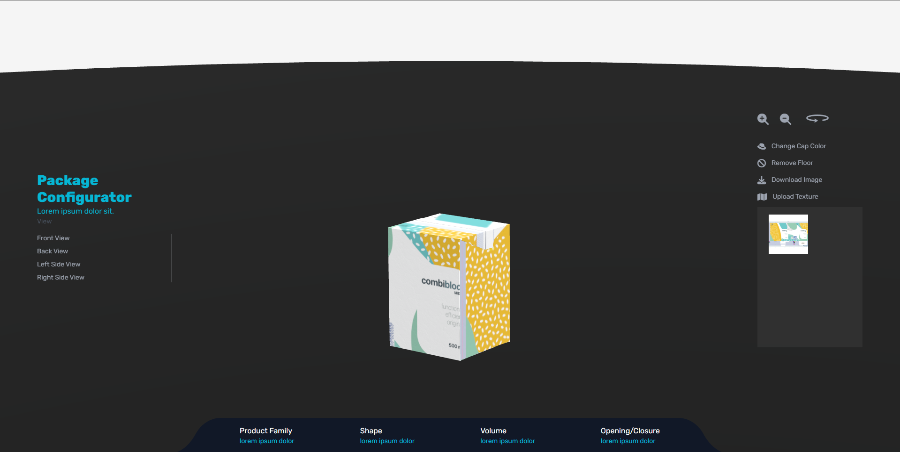

## SIG Package Viewer --- ### Core Features - Preset camera views - Free camera control - Switching body and cap models - Customizing cap color - Download PNG and JPG files - Upload custom design and apply on body --- ### Interface  --- ### 4 basic views <img data-src="images/camerapresets.png"> --- Regardless of the basic views, the user is able to control the camera with their mouse and move the scene in any direction --- Body and cap placement <img data-src="images/switch.png"> --- Changing cap color <img data-src="images/capcolor.png"> --- Download PNG for powerpoint <img data-src="images/downloadpng.png"> --- PNG Image <img data-src="images/download (1).png"> --- Custom Designs can be uploaded. These textures can applied on the body. But, if unrevised textures are uploaded and applied, then an inaccurate result will be displayed. --- Applying Texture <img data-src="images/applytexture.png"> --- - This is an experimental product. We developed this using only 1 document from reference pdf. - There are still model and texture bugs. - Those bugs are a result of misplaced textures and model. It can be corrected easily if the entire team is involved in the product.
Core Features
Preset camera views
Free camera control
Switching body and cap models
Customizing cap color
Download PNG and JPG files
Upload custom design and apply on body
4 basic views